Искусство в Израиле. Выставка "ТЕКСТИЛЬ в 3D"
Выставка студенческих работ под названием "Текстиль в 3D" прошла в Школе Дизайна в Хайфе (официальное название школы "The NB Haifa School of Design").
фото: Эфраим Калиш
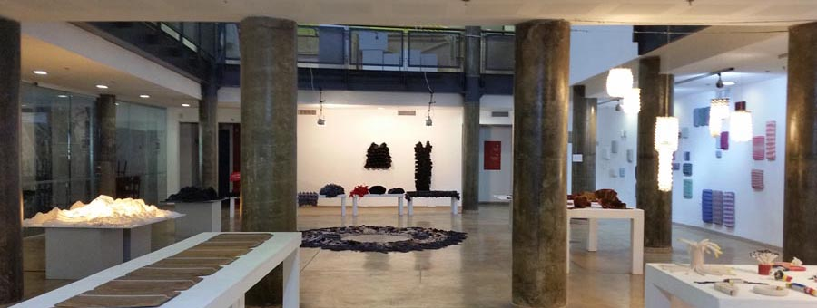
Своими впечатлениями от весенней выставки поделилась дизайнер одежды Леся Репетивская.Читайте также статью Л.Репетивской "Идем в СВОЙ ГАРДЕРОБ. Размышления О МОДЕ"
видео с выставки Выставка "ТЕКСТИЛЬ В 3D"
Сейчас в Израиле самое красивое время года. Цветет жакаранда, скоро расцветет делоникс. Прелюдией ко всей этой красоте может служить эта выставка.
Цветущий мирт
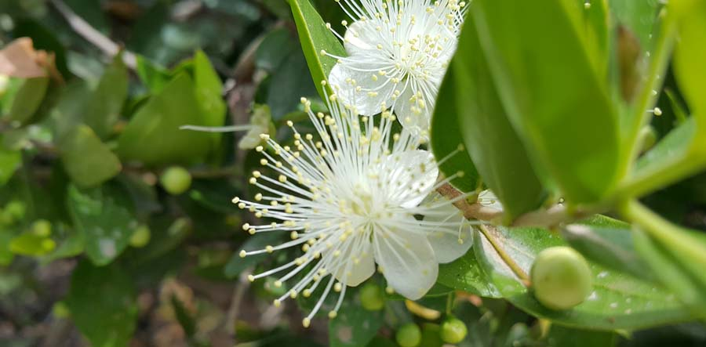
Земля Израиля всегда была плодовита талантливыми людьми. В этом можно убедиться на этой выставке студенческих работ. Проснулся азарт. Сразу захотелось понять, как все это сделано. А сделано здорово и талантливо. Счастливы, я думаю, преподаватели, которые могут научить современное поколение чему-то старому и одновременно всегда новому. Все, что мы знаем из истории текстиля, сделано здесь так, как это должно быть сделано сегодня, на уровне новых технологий.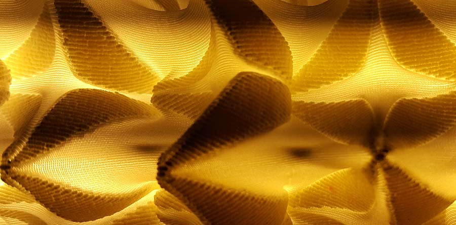
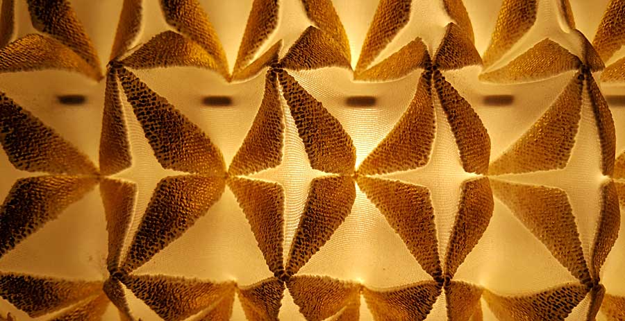
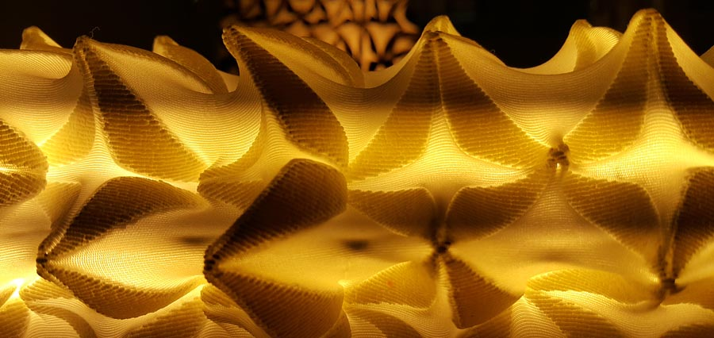
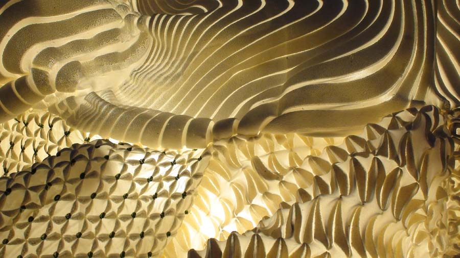
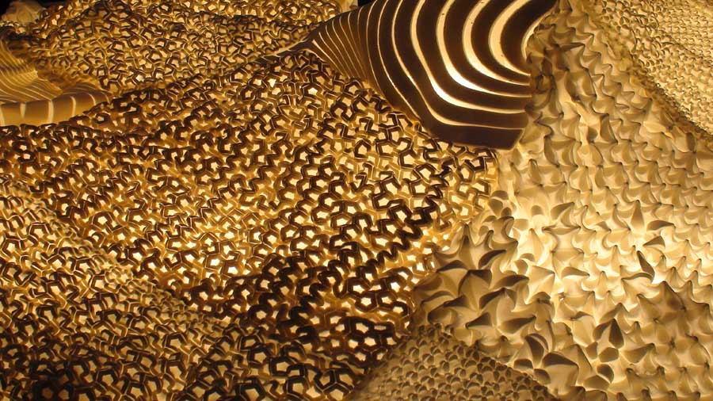
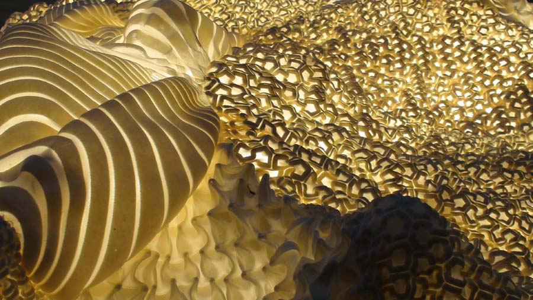
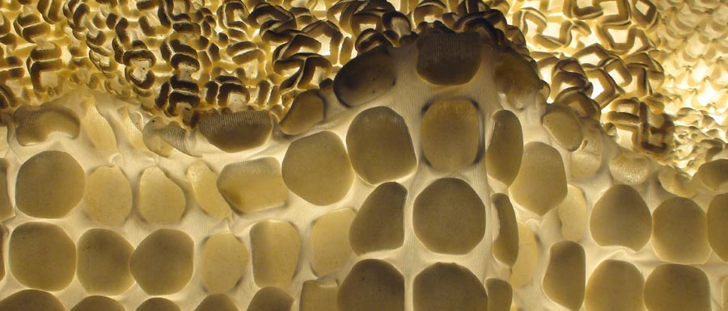
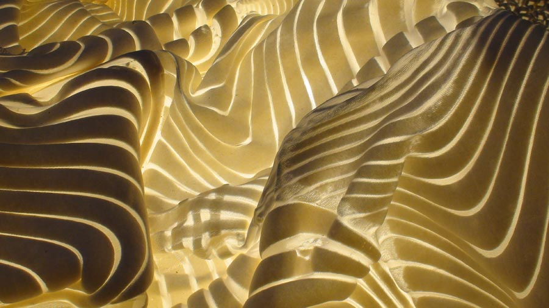
Сам факт, того, что я здесь нахожусь уже дает мне вдохновение. Потому что любое соприкосновение с талантом, который по определению хрупок, уже счастье. И не зависимости от того, что ты проходишь в жизни, достаточно посмотреть на какую-то красоту, природную, или дела рук человека – за тем и другим стоит Божественное вдохновение.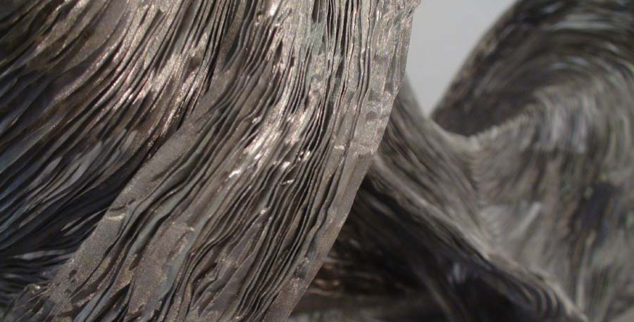
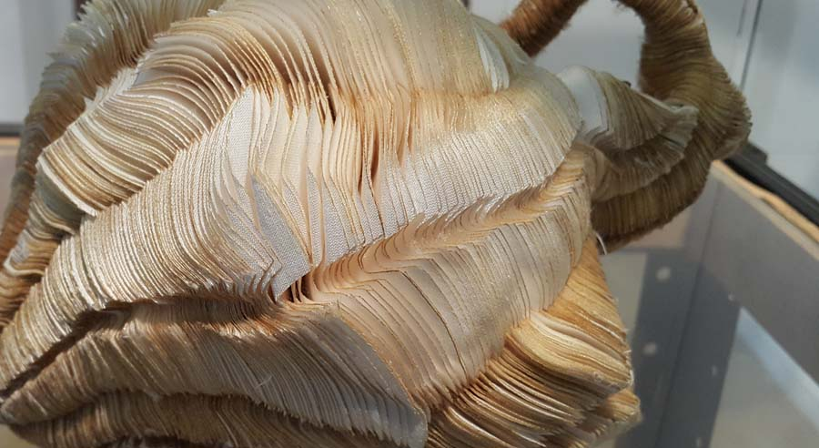
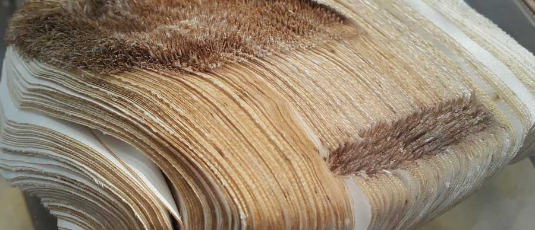
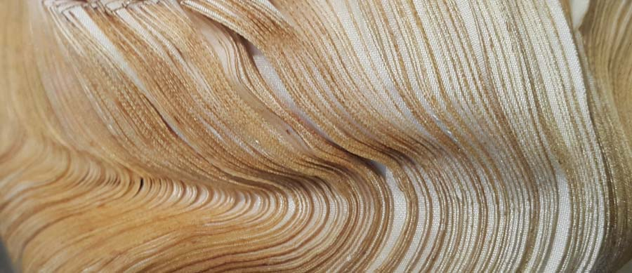
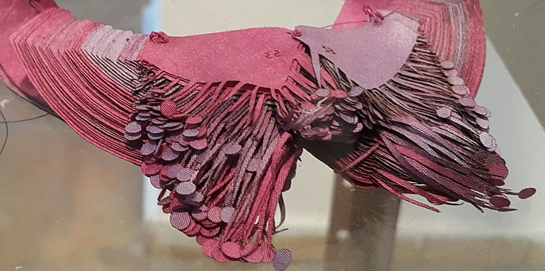
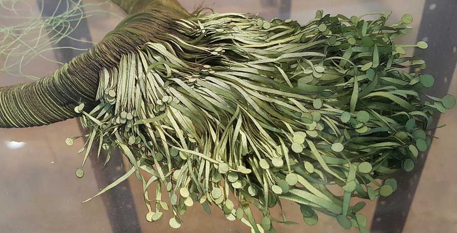
См. также другое видео с участием Леси Репитивской "Вектор израильской моды"